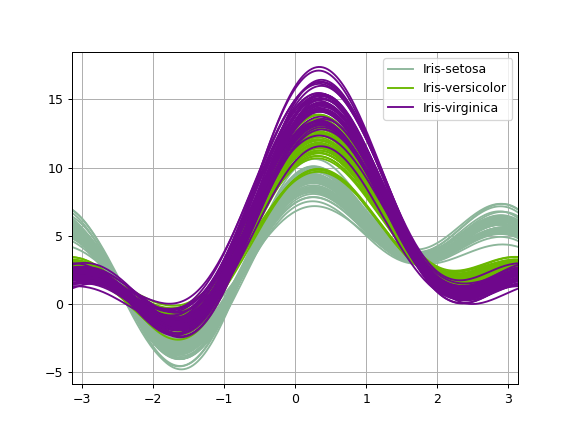

pandas.plotting.andrews_curves#
- pandas.plotting.andrews_curves(frame, class_column, ax=None, samples=200, color=None, colormap=None, **kwargs)[source]#
Generate a matplotlib plot for visualising clusters of multivariate data.
Andrews curves have the functional form:
\[f(t) = \frac{x_1}{\sqrt{2}} + x_2 \sin(t) + x_3 \cos(t) + x_4 \sin(2t) + x_5 \cos(2t) + \cdots\]Where \(x\) coefficients correspond to the values of each dimension and \(t\) is linearly spaced between \(-\pi\) and \(+\pi\). Each row of frame then corresponds to a single curve.
- Parameters
- frameDataFrame
Data to be plotted, preferably normalized to (0.0, 1.0).
- class_columnlabel
Name of the column containing class names.
- axaxes object, default None
Axes to use.
- samplesint
Number of points to plot in each curve.
- colorstr, list[str] or tuple[str], optional
Colors to use for the different classes. Colors can be strings or 3-element floating point RGB values.
- colormapstr or matplotlib colormap object, default None
Colormap to select colors from. If a string, load colormap with that name from matplotlib.
- **kwargs
Options to pass to matplotlib plotting method.
- Returns
Examples
>>> df = pd.read_csv( ... 'https://raw.githubusercontent.com/pandas-dev/' ... 'pandas/main/pandas/tests/io/data/csv/iris.csv' ... ) >>> pd.plotting.andrews_curves(df, 'Name') <AxesSubplot: title={'center': 'width'}>
